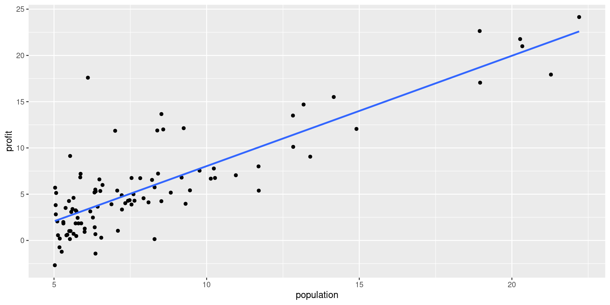
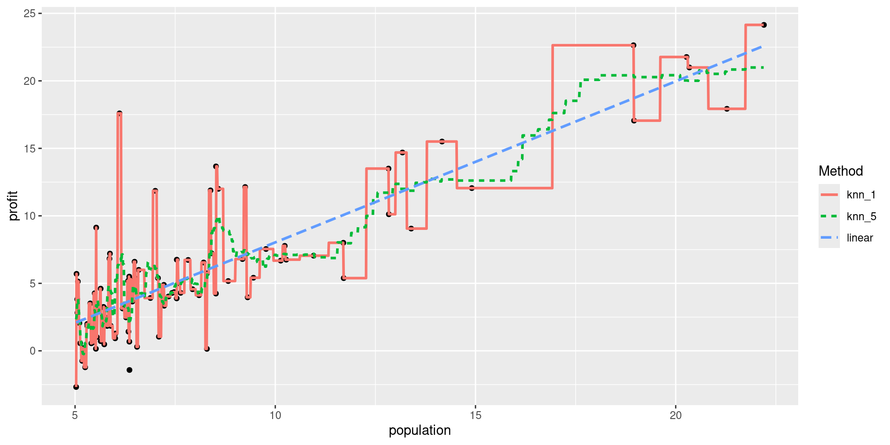

MAT-427: Multiple Linear Regression + Data Splitting
Computational Setup
K-Nearest Neighbors
Regression: Conditional Averaging
Restaurant Outlets Profit dataset
What is a good value of \(\hat{f}(x)\) (expected profit), say at \(x=6\)?
A possible choice is the average of the observed responses at \(x=6\). But we may not observe responses for certain \(x\) values.
K-Nearest Neighbors (KNN) Regression
- Non-parametric approach
- Formally: Given a value for \(K\) and a test data point \(x_0\), \[\hat{f}(x_0)=\dfrac{1}{K} \sum_{x_i \in \mathcal{N}_0} y_i=\text{Average} \ \left(y_i \ \text{for all} \ i:\ x_i \in \mathcal{N}_0\right) \] where \(\mathcal{N}_0\) is the set of the \(K\) training observations closest to \(x_0\).
- Informally, average together the \(K\) “closest” observations in your training set
- “Closeness”: usually use the Euclidean metric to measure distance
- Euclidean distance between \(\mathbf{X}_i=(x_{i1}, x_{i2}, \ldots, x_{ip})\) and \(\mathbf{x}_j=(x_{j1}, x_{j2}, \ldots, x_{jp})\): \[||\mathbf{x}_i-\mathbf{x}_j||_2 = \sqrt{(x_{i1}-x_{j1})^2 + (x_{i2}-x_{j2})^2 + \ldots + (x_{ip}-x_{jp })^2}\]
KNN Regression (single predictor): Fit

Regression Methods: Comparison
Question!!!
As \(K\) in KNN regression increases:
- the flexibility of the fit \(\underline{\hspace{5cm}}\) (increases /decreases)
- the bias of the fit \(\underline{\hspace{5cm}}\) (increases/decreases )
- the variance of the fit \(\underline{\hspace{5cm}}\) (increases/decreases)
K-Nearest Neighbors Regression (multiple predictors)
- Let’s look at the
house_pricesdata
# A tibble: 6 × 3
Sale_Price Gr_Liv_Area Bedroom_AbvGr
<int> <int> <int>
1 215000 1656 3
2 105000 896 2
3 172000 1329 3
4 244000 2110 3
5 189900 1629 3
6 195500 1604 3- Should 1 square foot count the same as 1 bedroom?
- Need to center and scale (freq. just say scale)
- subtract mean from each predictor
- divide by standard deviation of each predictor
- compares apples-to-apples
Scaling in R
# scale predictors
ames_scaled <- tibble(size_scaled = scale(ames$Gr_Liv_Area),
num_bedrooms_scaled = scale(ames$Bedroom_AbvGr),
price = ames$Sale_Price)
head(ames_scaled) # first six observations# A tibble: 6 × 3
size_scaled[,1] num_bedrooms_scaled[,1] price
<dbl> <dbl> <int>
1 0.309 0.176 215000
2 -1.19 -1.03 105000
3 -0.338 0.176 172000
4 1.21 0.176 244000
5 0.256 0.176 189900
6 0.206 0.176 195500K-Nearest Neighbors Regression (multiple predictors)
- Must also scale test data points using mean and sd from training set!!!!
- Test Point:
size= 2000 square feet, andnum_bedrooms= 3, then
Linear Regression vs K-Nearest Neighbors
- Linear regression is a parametric approach (with restrictive assumptions), KNN is non-parametric.
- Linear regression works for regression problems (\(Y\) numerical), KNN can be used for both regression and classification - i.e. \(Y\) qualitative (next lesson)
- Linear regression is interpretable, KNN is not.
- Linear regression can accommodate qualitative predictors and can be extended to include interaction terms as well while KNN does not allow for qualitative predictors
- Performance: KNN can be pretty good for small \(p\), that is, \(p \le 4\) and large \(n\). Performance of KNN deteriorates as \(p\) increases - curse of dimensionality
Classification Problems
- Response \(Y\) is qualitative (categorical).
- Objective: build a classifier \(\hat{Y}=\hat{C}(\mathbf{X})\)
- assigns class label to a future unlabeled (unseen) observations
- understand the relationship between the predictors and response
- Two ways to make predictions
- Class probabilities
- Class labels
Classification Problems: Example
Default dataset
default student balance income
1 No No 729.5265 44361.625
2 No Yes 817.1804 12106.135
3 No No 1073.5492 31767.139
4 No No 529.2506 35704.494
5 No No 785.6559 38463.496
6 No Yes 919.5885 7491.559We will consider default as the response variable.
Classification Problems: Example
For some algorithms, we might need to convert the categorical response to numeric (0/1) values.
Default dataset
Default$default_id <- ifelse(Default$default == "Yes", 1, 0) # create 0/1 variable
head(Default, 10) # print first ten observations default student balance income default_id
1 No No 729.5265 44361.625 0
2 No Yes 817.1804 12106.135 0
3 No No 1073.5492 31767.139 0
4 No No 529.2506 35704.494 0
5 No No 785.6559 38463.496 0
6 No Yes 919.5885 7491.559 0
7 No No 825.5133 24905.227 0
8 No Yes 808.6675 17600.451 0
9 No No 1161.0579 37468.529 0
10 No No 0.0000 29275.268 0K-Nearest Neighbors Classifier
Given a value for \(K\) and a test data point \(x_0\), \[P(Y=j | X=x_0)=\dfrac{1}{K} \sum_{x_i \in \mathcal{N}_0} I(y_i = j)\]
where \(\mathcal{N}_0\) is known as the neighborhood of \(x_0\).
For classification problems, the predictions are obtained in terms of majority vote (unlike in regression where predictions are obtained by averaging).
K-Nearest Neighbors Classifier: Build Model
Default dataset
response (\(Y\)): default and predictor (\(X\)): balance
K-Nearest Neighbors Classifier: Predictions
Default dataset
- One can directly obtain the class label predictions as below.
- Otherwise, one can first obtain predictions in terms of probabilities and then convert them into class label predictions based on a threshold.
K-Nearest Neighbors Classifier: Performance
Default dataset
# create confusion matrix
# use the following code only when all predictions are from the same class
# levels(knn_class_preds_1) = c("No", "Yes")
confusionMatrix(data = knn_class_preds_1, reference = Default$default, positive = "Yes")Confusion Matrix and Statistics
Reference
Prediction No Yes
No 9619 215
Yes 48 118
Accuracy : 0.9737
95% CI : (0.9704, 0.9767)
No Information Rate : 0.9667
P-Value [Acc > NIR] : 3.067e-05
Kappa : 0.461
Mcnemar's Test P-Value : < 2.2e-16
Sensitivity : 0.3544
Specificity : 0.9950
Pos Pred Value : 0.7108
Neg Pred Value : 0.9781
Prevalence : 0.0333
Detection Rate : 0.0118
Detection Prevalence : 0.0166
Balanced Accuracy : 0.6747
'Positive' Class : Yes